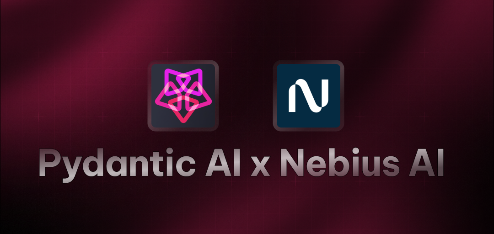

PydanticAI Starter Agent
A powerful AI agent built with PydanticAI that provides real-time weather information for any city. This agent uses the Nebius AI model to deliver accurate weather forecasts and insights.
Features
- 🌤️ Real-time Weather: Get current weather forecasts for any city worldwide
- 🔍 Intelligent Search: Uses DuckDuckGo search to find accurate weather information
- 🤖 Interactive Interface: Simple command-line interface for weather queries
- ⚡ Fast Response: Quick and accurate weather information delivery
- 🎯 Customizable: Easy to modify for different cities and weather-related queries
Tech Stack
- PydanticAI framework for AI agent development
- Nebius AI's Meta-Llama-3.1-70B-Instruct model
- DuckDuckGo Search Tool for weather information
Prerequisites
- Python 3.8 or higher
- Nebius API key (get it from Nebius Token Factory)
Installation
1. Get the code
git clone https://github.com/nebius/token-factory-cookbook/
cd agents/pydantic-weather-agent
2. Install dependencies:
using uv
# create a venv and install dependencies
uv sync
Or install using python pip
pip install -r requirements.txt
3 - Create .env file
Create a .env file in the project root and add your Nebius API key:
cp env.example .env
NEBIUS_API_KEY=your_api_key_here
Running the agent
Using uv
uv sync
uv run python agent.py
Using python pip
python agent.py
The agent will fetch and display the weather forecast for the specified city (default: New York).
Example Queries
- "What is the weather forecast for San Francisco today?"
- "What's the temperature in London right now?"
- "Will it rain in Tokyo tomorrow?"
- "What's the weather like in Sydney?"
- "Show me the forecast for Paris"
References
- PydanticAI Framework
- Nebius AI
- Contributed from awesome-ai-apps
Notebooks in this recipe: